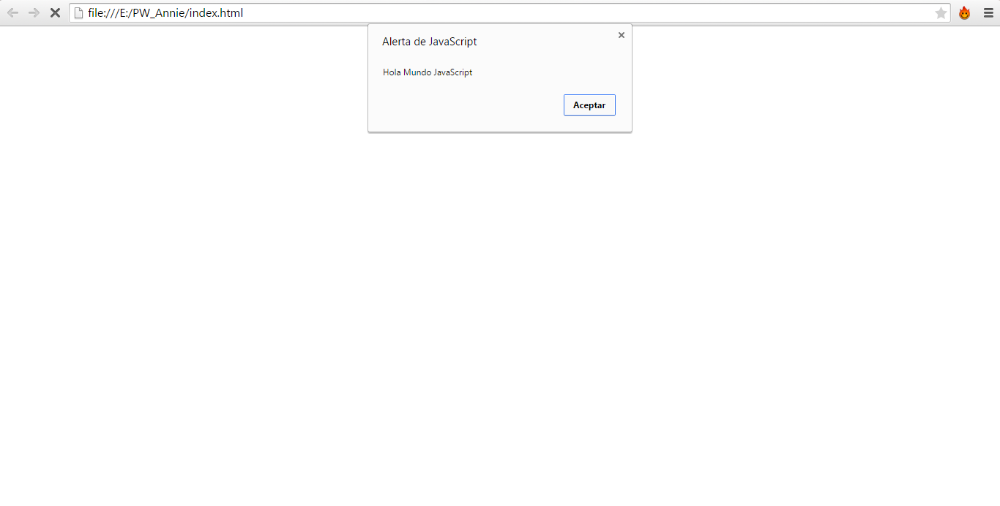

Hernandez Lopez David Alberto
12170865
6to. Semestre
Instituto tecnologico de Mexico
culiacan, Sinaloa
Ing. Tecnologias de la informacion y comunicaciones
Primer Actividad de HTML
Esta pagina muestra la primera y la basica estructura de HTML 5
Segunda Actividad de HTML
La pagina que se muestra a continuacion es una pagina que elaboramos con puro texto, habia tanto texto que la pagina scrolleaba hacia abajo, por lo tanto era necesario bajar la pagina.
en esta actividad utilizamos etiquetas "a" para ir de parrafo en parrafo segun era el que escogieramos.
Tercera Actividad de HTML
En este caso solo colocamos algunos elementos, como "inputs" o tambien llamadas cajas de texto, algo de texto y unos "labels", un combobox o en html llamada "selects" y por ultimo dos botones como aun no utilizabamos java script, nada era funcional
Cuarta Actividad de HTML
Esta es la cuarta actividad realizada en clase de HTML
Quinta Actividad de HTML
Esta es la quinta actividad HTML realizada en clase
Sexta Actividad de HTML
En este caso solo colocamos algunos elementos, como "inputs" o tambien llamadas cajas de texto, algo de texto y unos "labels", un combobox o en html llamada "selects" y por ultimo dos botones como aun no utilizabamos java script, nada era funcional
Septima Actividad de HTML
En este caso solo colocamos algunos elementos, como "inputs" o tambien llamadas cajas de texto, algo de texto y unos "labels", un combobox o en html llamada "selects" y por ultimo dos botones como aun no utilizabamos java script, nada era funcional
Primera Actividad de CSS
A esta pagina le dimos un poco de estilos al HTML.
con CSS3 le dimos al header un backgorund de color rosa, algunos botones, logramos colocar tres textos en linea con la propiedad inline-block, al igual que acomodamos una imagen dentro del header para que quedara como imgen del encabezado, un footer, y oviamete un titulo.
Segunda Actividad de CSS
en esta actividad se coloco un video solamente y se le dio un estilo de box shadow para ponerle sombra.
Tercera Actividad de CSS - uso Bootstrap
Utilizamos la herramienta de estilos de bootstrap para colocar botones con mejores diseños y colores, al igual qu inputs y paneles con la misma firma de bootstrap, algunas cosas quedan como predeterminadas como el font de la letra.
Cuarta Actividad de CSS
En este caso solo colocamos algunos elementos, como "inputs" o tambien llamadas cajas de texto, algo de texto y unos "labels", un combobox o en html llamada "selects" y por ultimo dos botones como aun no utilizabamos java script, nada era funcional
Quinta Actividad de CSS
En este caso solo colocamos algunos elementos, como "inputs" o tambien llamadas cajas de texto, algo de texto y unos "labels", un combobox o en html llamada "selects" y por ultimo dos botones como aun no utilizabamos java script, nada era funcional
Sexta Actividad de CSS
En este caso solo colocamos algunos elementos, como "inputs" o tambien llamadas cajas de texto, algo de texto y unos "labels", un combobox o en html llamada "selects" y por ultimo dos botones como aun no utilizabamos java script, nada era funcional
Examen de CSS
En este caso solo colocamos algunos elementos, como "inputs" o tambien llamadas cajas de texto, algo de texto y unos "labels", un combobox o en html llamada "selects" y por ultimo dos botones como aun no utilizabamos java script, nada era funcional
Primera actividad de JS

el primer programa java script que elaboramos fue el conocido hola mundo, en una alerta de java script
Segunda Actividad de JS
el el segundo programa de java script elaboramos una aplcacion para darle un nombre y que este me retornara un tipo de data string.
Tercera Actividad de JS
en la tercera aplicacion elaboramos una calculadora funcional que multiplicaba, sumaba, dividia y restaba, con interfas grafica utilizando una tabla y varios botones.
Primera Actividad de PHP
En el primer y unico ejercicio de PHP que elaboramos, hicimos un sistema para altas, bajas, y consultas, al mimso tiempo utlizando un log-in.